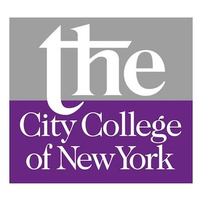

Norton Y.R. Li
A resourceful, adaptable Data Engineer / Data Analyst with professional experience as a Ph.D. research scientist highly skilled in handling real-world datasets, performing data cleaning and visualization, solving complex theoretical and experiential problems. Adaptable, friendly, and helpful; trained to perform independently as well as on teams.
Experience
Software Engineer - Machine Learning

Data Engineer / Data Analyst

Research Scientist
Math Instructor (Part-Time)
Research Assistant
Education
Stony Brook University
The City College of New York (CUNY)
Skills
- Data Visualization Tools & Libraries: Tableau, Power BI, matplotlib, seaborn, plotly, ggplot, folium
- BASH, PowerShell
- OriginLab
- ImageJ
- minitab
- MATLAB
- ChemOffice
- Battery Tester: Maccor, Neware, Bio-Logic, Arbin, CHI
- Operational Environment: Glove Box, Dry Room, Clean Room
- Battery Cell Assembly: Coin, Pouch, Cylindrical, Teflon, T-Shape
- Characterization Technique: X-Ray Diffraction (XRD), Scanning Electron Microscopy (SEM), Transmission Electron Microscopy (TEM), thermogravimetric analysis (TGA), Differential scanning calorimetry (DSC)
- Modeling: Electrochemical Impedance Spectroscopy (EIS)
- Microsoft Office
Projects
-
Python + Airflow + Jupyter Notebook + R + MySQL + Spark(SQL) + AWS + Tableau Dashboard
Visualization tools: Matplotlib, plotly, folium, ggplot2, seaborn, Tableau
Worked in a team of three designing a data pipeline and analysis on factors are driving housing prices in Philadelphia City; my responsibility including on data wrangle, analysis, built visualization, and prediction.
R + MongoDB (NoSQL) + ggplot2/plotlyVisualization tools: ggplot2, plotly
Self-study of a combination of New Language, New NoSQL Database, and Data Visualization tools; utilized R as the language, MongoDB as the storage and ggplot/plotly as visualization tool; selected a LEGO color world dataset to build up this project and used a 3D interactive plot to visualize and indicate trends.
Python + Pandas + Airflow + MySQL + PostgreSQL + Jupyter Notebook + AWS (S3, EC2, RDS)Visualization tools: Matplotlib, folium, seaborn
Studied the open-source workflow management platform Apache Airflow by using Python; applied Airflow Directed Acyclic Graph (DAGs) to design a data pipeline project on the New York City Airbnb Selection; utilized data extract, transform, load (ETL) by Airflow; included data download from website, preliminary data cleanup, SQL database storage, and Jupyter notebook analysis report; pipeline works via localhost and AWS (EC2, RDS, S3).
Pycharm + class + Terminal + Unit Testing + Object Oriented ProgrammingTableau Public + Tableau DesktopVisualization tools: Tableau
Python (pyspark, flask, JSON) + Kafka + Javascript + htmlVisualization tools: Mapbox
Publications
- 1. B. Zhang, C. D. Quilty, L. Wang, X. Hu, A. Poyraz, D. C. Bock, Y.R. Li, L. Gerhardt, L. Wu, Y. Zhu, A. C. Marschilok, E. S. Takeuchi, K. J. Takeuchi. J. Electrochem. Soc., 167, 110528 (2020)
- 2. A. M. Bruck, Y.R. Li, A. B. Brady, A.(C.) Chuang, J. S. Okasinski, K. J.Takeuchi, E. S. Takeuchi, A. C.Marschilok, J. Electrochem. Soc., 2019 166, A3210-A3216
- 3. A. Poyraz, C. D. Quilty, L.M. Housel, X. Hu, A. M. Bruck, Y.R. Li, J. Yin, B. Zhang, J. Huang, L. Wu, Y. Zhu, E.S. Takeuchi, A. C. Marschilok, K. J. Takeuchi. J. Electrochem. Soc., 2019 166(4) A670-A678
- 4. Y.R. Li, A. Bruck, A. Brady, D. Bock, K. Takeuchi, E. Takeuchi, and A. Marschilok, J. Electrochem. Soc., 2017 164(12): A2457-A2467
- 5. Y.R. Li, A. Poyraz, X. Hu, M. Cuiffo, C. Clayton, L. Wu, Y. Zhu, E. Takeuchi, A. Marschilok, and K. Takeuchi., J. Electrochem. Soc., 2017 164(9): A2151-A2158
- 6. L. Wang, S. Yue, Q. Zhang, Y. Zhang, Y.R. Li, C. Lewis, K. Takeuchi, A. Marschilok, E. Takeuchi and S. Wong, ACS Energy Lett., 2, 1465-1478 (2017)
- 7. J. Durham, A. Brady, C. Cama, D. Bock, M. Ge, C. Pelliccione, Q. Zhang, Y.R. Li, Y. Zhang, H. Yan, X. Huang, Y. Chu, E. Takeuchi, K. Takeuchi, A. Marschilok., Phys. Chem. Chem. Phys., (2017), 19, 22329-22343
- 8. L. Wang* , Y.R. Li* , J. Li, S. Zou, E. Stach, K. Takeuchi, E. Takeuchi, A. Marschilok and S. Wong, ECS J. Solid State Sci. Technol., 6 (6) M1-M10 (2017) (*Equal contribution)
- 9. C. Lewis, Y.R. Li, L. Wang, J. Li, E. Stach, K. Takeuchi, A. Marscilok, E. Takeuchi and S. Wong, ACS Sustainable Chem. Eng., 2016, 4 (12), pp 62997-6312
- 10. C. Pelliccione, Y.R. Li, A. Marschilok, K. Takeuchi and E. Takeuchi, Phys. Chem. Chem. Phys. 2016, 18, 2959-2967.
- 11. Y.R. Li, A. Marschilok, E. Takeuchi and K. Takeuchi, J. Electrochem. Soc., 2016, volume 163, issue 2, A281-285
- 12. Y.R. Li, K. Kirshenbaum, K. Takeuchi, A. Marschilok and E. Takeuchi, ECS Transactions, 2015 volume 66, issue 9, 247-255
- 13. Y. Pan, Y.R. Li, Y. Zhao, and D.L Akins, J. Chem. Educ.2015, 92 (11), pp 1860-1865
- 14. H. Zhang, Y. Zhou, Y.R. Li, T.J. Bandosz and D.L. Akins, J. Colloid Interface Sci, 375 (2012) 106-111
Awards & Certifications
- Certificate of Completion - 12 Week Data Engineering & Analytics Bootcamp, 2020 @ Zip Code Wilmington
- Chemistry Award for Excellence in Doctoral Research, 2017 @ Stony Brook University
- Ph.D. Research Assistantship - Tuition Scholarship, 2013 - 2017 @ Stony Brook University
- 1st Place - Advance Energy Conference 2016, Poster Session Winner, 2016 @ New York City
- Ph.D. Teaching Assistantship - Tuition Scholarship, 2012 - 2013 @ Stony Brook University
- Max Pavey Scholarship Award 2011 @ The City College of New York
- Ira Kukin Award II 2011 @ The City College of New York
- Summa Cum Laude (High Honor) 2011 @ The City College of New York
- Arthur G. Levy Scholarship, 2010 @ The City College of New York